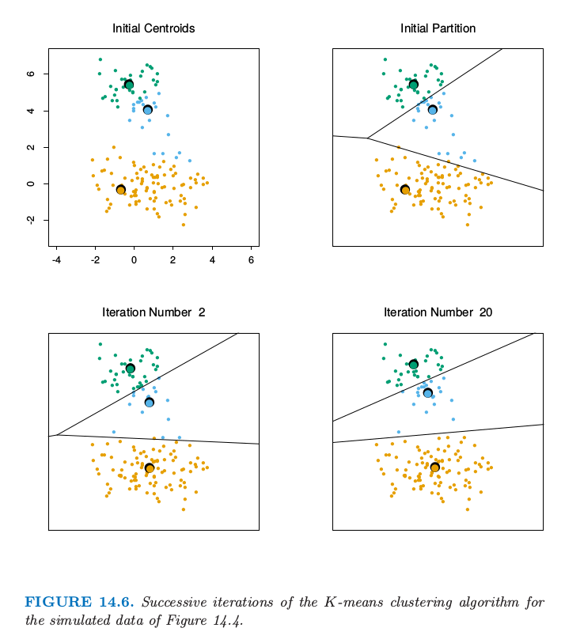
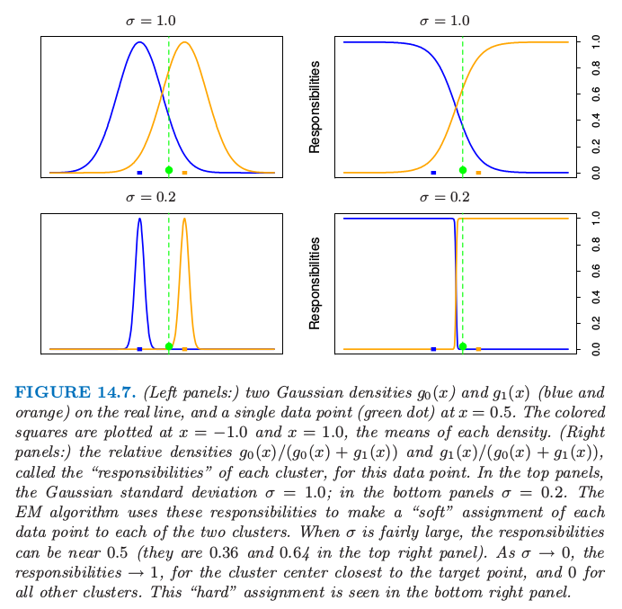
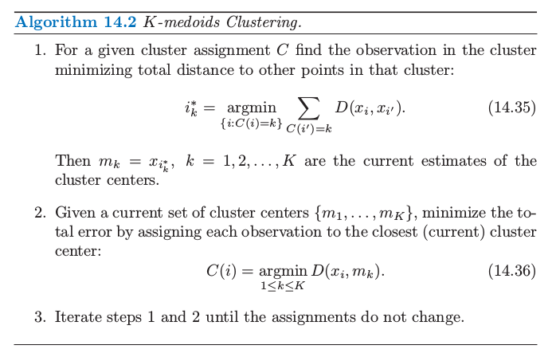
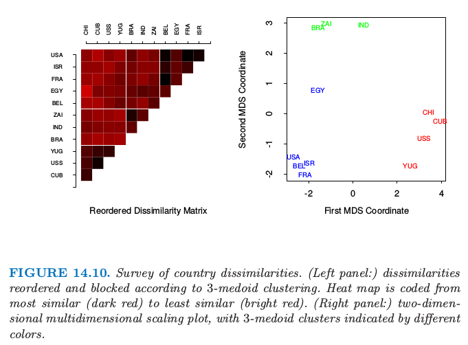
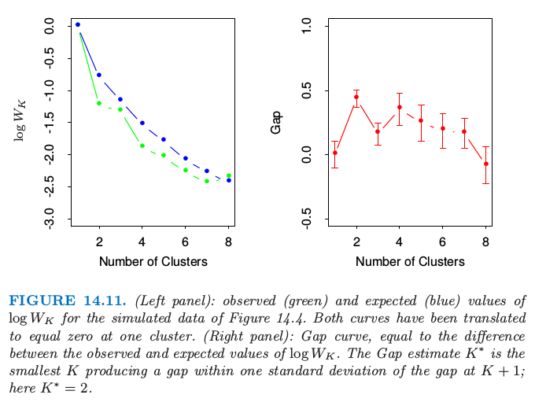
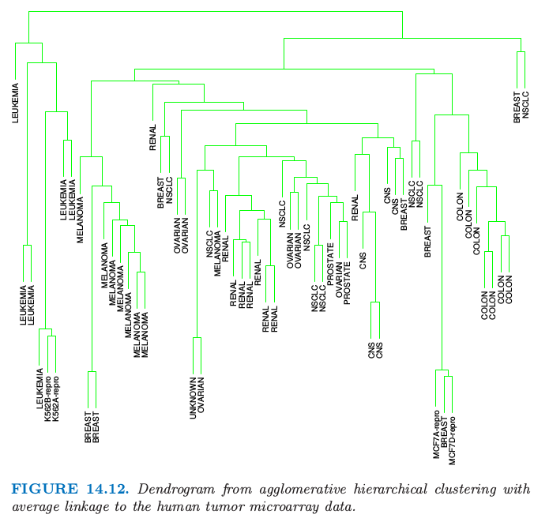
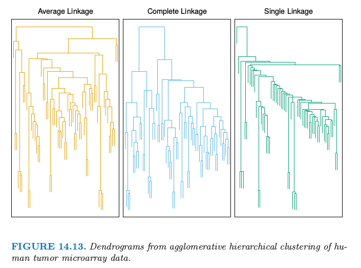
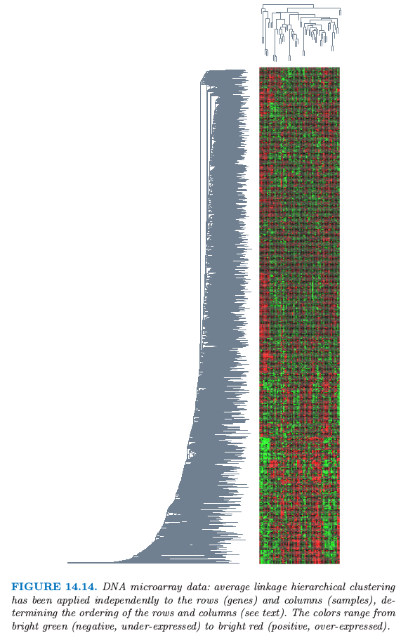

14.3 聚类分析¶
| 原文 | The Elements of Statistical Learning |
|---|---|
| 翻译 | szcf-weiya |
| 时间 | 2017-02-22:2017-02-23 |
| 更新 | 2019-10-03 09:57:02 |
| 状态 | Done |
聚类分析 (cluster analysis)，也称作 数据分离 (data segmentation)，有多种不同的目标．所有的目标都与将 点集 (a collection of objects) 分成子集或者簇有关，使得同一个簇中的点比不在同一个簇的点彼此更接近．一个点可以用一系列度量来描述，或者通过与其它点的关系．另外，目标有时是将簇排列成自然分层的形式．这涉及到依次将簇本身进行分类使得在每一层次，同一类中的簇比不在同类的簇彼此更相似．
weiya 注：翻译
为了更好地表述，将上文中的 object 翻译成“点”．
聚类分析也用来构造描述型统计量来确定数据点是否包含不同的子群，每个群表示有着显著不同特点的点集．这一目标需要评估被分到各自簇中的点集间的差异程度．
weiya 注
这里谈到了两个目标：第一个提到了 hierarchy，这与系统聚类相似；第二个提到用统计量衡量簇间的差异，如各种距离和相似系数．
聚类分析的所有目标的核心是度量要聚类的单个点间相似（或不相似）的程度．聚类方法试图基于点间相似性的定义来将其分类．相似性的定义只能从关注的主题得到．某种程度上，这个情形与确定预测问题（监督学习）中的损失或花费函数相似．在预测问题中，损失函数与错误的预测有关，而错误的预测取决于数据之外的考虑．
weiya 注
简而言之，聚类方法中相似性的定义就如同监督学习问题中损失函数一样重要．
图 14.4 显示了通过流行的 K-means 算法将一些模拟数据聚成三簇．这种情况下其中的两个簇不是很好地分离开，所以“分割（segmentation）”比“聚类（clustering）”能将这部分过程描述得更精确．K-means 聚类以猜三个聚类中心为开始．然后交替进行下面的步骤直到收敛：
- 对于每个数据点，确定（欧式空间）中最近的聚类中心．
- 每个聚类中心用与其最近的所有数据点的平均坐标来替换．

图 14.4. 平面上的模拟数据，用 K-means 聚类算法聚成三类（分别用橘黄色，蓝色和绿色）．
我们将在后面更详细地描述 K-means，包括怎样选取类别数目的问题（例子中是三个）．K-means 聚类是从上到下（top-down）的过程，而其他我们描述的分类方式是从下往上（bottom-up）的过程．所有聚类技巧的根本是两个点之间距离或者相似性的度量．我们在描述各种不同的聚类算法之前首先讨论距离的度量．
接近矩阵(proximity matrices)¶
有时数据是直接用点对之间的接近（相似或亲近）来表示．这些可以是 相似性 (similarities) 或者 不相似性 (dissimilarities)（不同或者不够近似）．举个例子，在社会科学实验中，参与者被要求去判断特定的物品与另一个之间的差异程度．不相似性进一步可以对这些判断进行平均来计算．这种类型的数据可以表示成 $N\times N$ 的矩阵 $\mathbf D$，其中 $N$ 为物品数目的个数，并且每个元素 $d_{ii’}$ 记录了第 $i$ 个和第 $i’$ 个物品之间的接近程度．这个矩阵接着作为聚类算法的输入．
大部分算法假定一个非负的不相似性矩阵，对角元素为 0：$d_{ii}=0,i=1,2,\ldots,N$．如果原始数据以相似性表示的，则某合适的非负单调下降函数可以用来将它们转换为不相似性．另外，大部分算法假定不相似性矩阵是对称的，所以如果原始矩阵 $\mathbf D$ 不是对称的，则必须用 $(\mathbf{D+D^T})/2$ 来替换．在严格意义下主观判断的差异并不是距离（distances），因为三角不等式 $d_{ii’}\le d_{ik}+d_{i’k}$ 对于所有的 $k\in{1,\ldots,N}$ 不满足．因此，一些采用距离的算法不能用这些数据．
基于属性的不相似性¶
大部分情形下我们对变量 $j=1,\ldots,p$（也称为属性）在 $i=1,2,\ldots,N$ 上有测量值 $x_{ij}$．因为大多数流行的聚类算法将不相似性矩阵作为输入，我们首先必须构造两个观测之间的成对不相似性．在大部分一般情形下，我们定义第 $j$ 个属性上不相似性 $d_j(x_{ij},x_{i’j})$，进一步定义 作为第 $i$ 和 $i’$ 点的不相似性．至今为止最普遍的选择是平方距离 然而，其它的情形也是可能的，而且可以导出潜在的不同的结果．对于非定量的属性（如类别型数据），平方距离可能不合适．另外的，有时候需要对属性赋予不同的权重，而不是像在 \eqref{14.20} 中赋予相等的权重．
我们首先讨论关于属性类别的几种情况．
定量变量¶
这种类型的变量（或属性）的度量用连续实值来表示．将它们间的“误差”定义为关于它们绝对差异的单调增加的函数是很自然的
除了平方误差损失 $(x_i-x_{i’})^2$，另一种普遍的选择是绝对误差．前者更加关注大的差异．另外，聚类可以基于相关系数
其中 $\bar x_i=\sum_jx_{ij}/p$．注意到这是在 变量 上平均，不是在观测上．如果输入已经标准化了，则 $\sum_j(x_{ij}-x_{i’j})^2\propto 2(1-\rho(x_i,x_{i’}))$．因此基于协方差（相似性）的分类与基于平方距离（不相似性）是等价的．
有序变量¶
这种类型的变量经常表示成邻接整数，而且实现值也看成有序集．举些例子，如学业成绩 (A,B,C,D,F)，偏好程度 (can’t stand, dislike, OK, like, terrific)．排名数据是一类特别的有序数据．有序变量的误差度量一般通过将它们 $M$ 个原始值（按照原始值规定的顺序）替换为下式来定义
于是它们接着可以看成这个尺度下的定量变量．
类别变量¶
对于无序的类别（也称作名义(nomial)）变量，成对数据的差异程度必须明确地表示出来．如果假设变量有 $M$ 个不同的值，可以排列成对称的 $M\times M$ 矩阵，元素 $L_{rr’}=L_{r’r},L_{rr}=0,L_{rr’}\ge 0$．最普遍的选择对于所有 $r\neq r’$ 取 $L_{rr’}=1$，而不相等的损失可以用来突出某些错误．
样品的不相似性 (object dissimilarity)¶
接着我们定义将 $p$ 个单属性不相似性 $d_j(x_{ij},d_{i’j}),j=1,2,\ldots,p$ 结合成一个单独的衡量整个不相似性的 $D(x_i,x_{i’})$，$D(x_i,x_{i’})$ 是两个有着各自属性值的点或观测 $(x_i,x_{i’})$ 之间的不相似性．这几乎总是通过加权平均（凸组合）的方式实现 这里 $w_j$ 是为了确定点间的整个不相似性对第 $j$ 个属性赋值的权重，权重表示了这个变量的相对影响．权重的选择取决于具体的问题．
重要的是意识到，对每个变量的设定相同的权重 $w_j$（如，$w_j=1\;\forall j$）不一定对所有变量有相同的影响．第 $j$ 个属性 $X_j$ 在点的不相似性 $D(x_i,x_{i’})$\eqref{14.24} 上的影响取决于它的相对贡献，这个相对贡献是对数据集中所有的数据对的平均样品不相似性 $\bar D$ 而言 其中， 是第 $j$ 个属性的平均不相似性．因此，第 $j$ 个变量的相对影响为 $w_j\cdot \bar d_j$，并且令 $w_j\sim 1/\bar d_j$ 会让所有的属性在表征样品间整个不相似性中有相等的影响．举个例子，$p$ 个定量变量以及对每个坐标使用平方误差距离，则 \eqref{14.24} 成为以定量变量为坐标轴的 $\IR^p$ 空间中成对点的（加权）欧氏距离
这种情形下 \eqref{14.25} 变成 其中 $\var_j$ 为 $\Var(X_j)$ 的样本估计．因此，每个这样变量的相对重要性与其在数据集上的方差成比例．一般地，对所有属性令 $w_j=1/\bar d_j$ 会导致它们中的每一个在成对物体 $(x_i,x_{i’})$ 上的整体不相似性上有相等的影响．尽管这看起来或许合理，并且通常推荐这样做，但是会产生严重的不良后果．如果目标是将数据分割成相似样品的类，所有属性或许不会对样品之间的不相似性的（取决于问题）概念贡献相等．一些属性值的差异可能会在某问题领域反映更大的实际的样品不相似性．
如果目标是发现数据的自然分类，一些属性或许比其他属性表现出更多的分类趋势．在分离类别时，越相关的变量越应该赋予更高的影响来定义 object dissimilarity．这种情况下给所有属性相等的影响会趋于隐藏掉这个类别，使得分类算法不能发现它们．图 14.5 展示了一个例子．

图14.5. 模拟数据：左图对原始数据应用 K-means（K=2）分类．两种颜色表示类别的成员．右图，聚类之前对特征进行第一次标准化．这等价于使用特征权重 $1/[2\cdot var(X_j)]$．标准化模糊了两个能完美分离的类．注意到每张图的横纵坐标使用相同的单位长度．
尽管选择单个属性不相似性 $d_j(x_{ij},d_{x_{i’j}})$ 和它们的权重 $w_j$的 简单的通用方法会令人愉快，但是在每个单个问题中，没有替代仔细思考的方式．确定一个合适的不相似性的度量远比选择聚类算法来得重要．该问题的这个方面在聚类领域比算法本身强调得少，因为它取决于特定的领域知识，并且不适合一般性的研究．
最后，观测值经常在一个或多个属性中有 缺失值 (missing values)．将缺失值合并到不相似性的计算 \eqref{14.24} 中的最普遍方法是在计算观测 $x_i$ 和 $x_{i’}$ 之间的不相似性时，省略掉至少有一个缺失值的观测对 $x_{ij},x_{i’j}$．这个方法在两个观测都没有共同测量值的情况中是不适用的．这种情况下，两个观测都会从分析中删掉．或者，可以使用每个属性未缺失值的平均值或中位数来插补缺失值．对于类别型变量，如果两个物体在相同变量上具有缺失值的情况下将两个对象视为相似是合理的，则可以将缺失值仅仅考虑成另一个类别值．
聚类算法¶
聚类分析的目标是将观测进行分类使得分到同一类中的成对非相似性趋向于比在不同类中小．聚类算法可以分成三种不同的类别：组合算法 (combinatorial algorithms)，混合模型 (mixture modeling)，以及 模式寻找 (mode seeking)．
组合算法直接对观测数据进行处理，而不直接引用潜在的概率模型．混合模型假设数据是从某概率密度函数对应的总体中抽取的独立同分布的样本．密度函数用参数化模型表征，该参数化模型为各组分密度函数的混合；每个组分密度表示其中的一类．这个模型接着利用极大似然或者对应的贝叶斯方式来拟合．模式寻找 (bump hunters) 采用非参数观点，试图直接估计不同的概率密度函数的模式．与每个单独的模式最接近的观测定义为单个簇．
混合模型在 6.8 节中有讨论．在 9.3 和 14.2.5 节中讨论的 PRIM 算法是模式寻找（或“bump hunters”）的例子．我们接下来讨论组合算法．
组合算法¶
最受欢迎的聚类算法不考虑描述数据的概率模型而直接将每个观测划分为一类或一簇．每个观测用整数 $i\in\{1,\cdots,N\}$ 来唯一标号．假定预先确定的类别个数 $K < N$，并且每个编号为 $k\in\{1,\ldots,K\}$．每个观测仅仅分配到一个类中．这些分配可以表示为多对一映射，或者编码器 $k = C(i)$，将第 $i$ 个观测分配到第 $k$ 个类．基于每个观测对的不相似性 $d(x_i,x_{i’})$ 来寻找特定的编码器 ${C^*(i)}$ 来实现要求的目标（细节在下面）．一般地，编码器 $C(i)$ 通过给出每个观测 $i$ 的值（类别分配）来显示描述．因此，过程的“参数”是 $N$ 个观测中每个的类别分配．调整这些来最小化表征聚类目标没有达到的程度的“损失”函数．
一种方式是直接确定数学上的损失函数并且试图通过一些组合优化算法来最小化．因为目标是将离得近的点分到同一类，一个自然的损失（或“能量”）函数会是 这个准则表征了分配到同一类的观测与另一个接近的程度．有时也被称作 “类内”点散 (point scatter)，因为 或者 其中 $d_{ii’}=d(x_i,x_{i’})$．$T$ 是总点散，给定数据后为常数，与类别分配是独立的．下面的 $B(C)$ 值是类间点散． 当观测分到远离的不同类中时这个值趋向于大．因此有 并且最小化 $W(C)$ 等价于最大化 $B(C)$.
通过组合优化的聚类分析原则上是直接的．简单地在 $N$ 个点分到 $K$ 个类中的所有可能分配上最小化 $W$ 或等价地最大化 $B$．不幸的是，这种穷举法的优化仅仅在非常小的数据集中才适用．不同的分配个数为（Jain and Dubes，19884） 举个例子，$S(10,4)=34,105$ 是可行的．但是 $S(N,K)$ 随着变量值的增大迅速增大．$S(19,4)\simeq 10^{10}$，并且大多数聚类问题涉及比 $N=19$ 更大的数据集．基于这个原因，实用的聚类算法只能验证所有可能编码 $k=C(i)$ 情形的非常小的一部分．目标是识别出可能包含最优解的小的子集，或者至少一个次优的划分．
这些可行的策略是基于迭代贪婪下降．给定初始划分．每一步迭代，以某种方式来改变类别划分，这种方式使得某准则的值比上一步的值有所改善的．这个类别的聚类算法区别于在每一步迭代修改类别分配的方式．当这种方式不能再改善，算法以当前的分配为其解而终止．因为在任一步的迭代中的类别分配是对上一步类别分配的扰动，只有所有可能分配 \eqref{14.30} 的非常小的一部分被检查．然而，这些算法收敛到局部最优，与全局最优相比可能是高度次优的．
K-means¶
K-means 算法是最流行的迭代下降聚类方法之一．适用于所有变量都为定量的情形，且选择下式的平方欧式距离作为其不相似性的度量 注意到加权欧式距离可以通过重新定义 $x_{ij}$ 来实现（练习 14.1）
weiya 注: Ex. 14.1
这个可以很容易计算．原问题及解答参见Issues 42: Ex. 14.1
类间点散 \eqref{14.28} 可以写成 其中$\bar x_k=(\bar x_{1k},\ldots,\bar x_{pk})$是与第 $k$ 个类的均值向量，并且 $N_k=\sum_{i=1}^NI(C(i)=k)$．
weiya 注：\eqref{14.31} 的推导
而
因此，通过以某种方式将 $N$ 个观测分配到 $K$ 个类中来最小化该准则，该方式为最小化每个类中观测点与类别中心（用该类中的点定义）的不相似性的平均值．
求解下列问题的迭代下降算法 可以通过注意到任意观测集 $S$ 有下式而得到． 因此我们可以通过求解扩大的优化问题而得到 $C^*$ 这个可以通过算法 14.1 给出的交替优化过程得以最小化．

每个步骤 1 和步骤 2 都降低准则 \eqref{14.33} 的值，所以收敛性是保证的．然而，结果可能会表现出次优局部最小值．Hartigan and Wong (1979)6的算法进一步研究，并且保证了单个的一个观测从一个类转换到另一个类不会降低目标值．另外，应该用许多初始值的许多随机选择来开始算法，然后选择有最小目标函数的解．
图 14.6 显示了图 14.4 的模拟数据的一些 K-means 迭代过，其中圆圈 O 表示重心．直线显示了点的划分，每个部分都是离重心最近的点的集合．这个划分也称为 Voronoi 曲面细分．20 次迭代之后收敛．

图 14.6. 对于图 14.4 的模拟数据的 K-means 聚类算法的逐次迭代
高斯混合作为 Soft K-means 聚类¶
K-means 聚类算法与估计特定的高斯混合模型的 EM 算法有关（6.8 节和 8.5.1 节）．EM 算法的步骤 E 对每个数据点基于在每个混合部分中的相对密度来赋予“responsibilities”，而步骤 M 基于当前的 responsibilities 重新计算各组分的密度参数．假设明确了我们有 $K$ 个混合组分，每个是有着标量协方差矩阵 $\sigma^2\mathbf I$ 的高斯密度．则在每个混合组分的相对密度是关于数据点到混合中心欧氏距离的单调函数．因此在这一步中 EM 是 soft 版本的 K-means 聚类，使得点以概率（而不是确定性地）分配到聚类中心．因为方差 $\sigma\rightarrow 0$，这些概率变成 0 和 1，两种方法也就一致．细节在 练习 14.2 中给出．
weiya 注: Ex. 14.2
Ex. 14.2 讨论了 $k$ 个高斯组分的混合模型，而算法 8.1 针对的是两组分的高斯混合模型，但主要思想是一致的．具体解题过程参见Issues 43: Ex. 14.2
图 14.7 说明了实线上两个聚类的结果．

图 14.7. (左：)实线为两个高斯密度 $g_0(x)$ 和 $g_1(x)$（蓝色和橘黄色），以及 $x=0.5$ 处的单个数据点（绿色圆点）．带颜色的方块画在$x=-1.0$ 和 $x=1.0$处，它们是各自密度的均值．（右：）对于每个数据点，相对密度 $g_0(x)/(g_0(x)+g_1(x))$ 和 $g_1(x)/(g_0(x)+g_1(x))$ 称作每个聚类的“responsibilities”．上面一排的两张图，高斯标准误差为 $\sigma=1.0$ 在下面的两张图中 $\sigma=0.2$．EM 算法用这些 responsibilities 来对每个数据点“soft”地分配到两个簇中．当 $\sigma$ 相对大，responsibilities 可以接近 0.5，（右上图中为 0.36 和 0.64）．当 $\sigma\rightarrow 0$ 时，responsibilities 接近 1，表示聚类中心离目标点很近，而剩下类别的 responsibility 接近 0．“hard”版本的分配如右下图所示．
例子：人类肿瘤微阵列数据¶
我们对第 １ 章描述的人类肿瘤微阵列数据应用 Ｋ-means 聚类．这是一个高维聚类的例子．数据为 $6830\times 64$ 的实值矩阵，每个元素表示基因（行）和样本（列）的表达测量值．这里我们对样本进行聚类，每个都是长度为 6830 的向量，对应 6830 个基因的表达值．每个样本有像 breast(乳腺癌)， melanoma (黑素瘤) 等标签；聚类时，我们不会用这些标签，但是会验证哪个标签落入到哪个簇中．
我们对从 1 到 10 的 $K$ 应用 K-means 聚类，而且对每次聚类计算总类间平方和，如图 14.8 所示．一般地我们在平方和曲线中寻找一个结点来定位最优簇的个数（见14.3.11）．这里没有显然的指示：为了说明我们选择$ K=3$ 给出如表 14.2 所示的三个类．

图14.8. 对人类种类微阵列数据应用K-means聚类的总簇间平方和．

表14.2. 人类肿瘤数据：每种类型的癌症在由K-means聚类得到的三个类中的个数
我们看到这个过程在聚集同样类型的癌症是很成功的．事实上，在第 2 类中的两个乳腺癌后来发现是误诊的，而是转移的黑素瘤 (melanomas)．然而，K-means 聚类在这个应用中有缺点．其中一个是，它没有给出簇中物体的线性顺序：我们仅仅以字母顺序列出来．第二，当聚类的数目 $K$ 改变，簇中的成员以任意方式变化．也就是，如 4 个类，这些类不要求嵌套在上面的三个类中．基于这个原因，系统聚类可能在这个应用中更好．
向量量化¶
K-means 聚类算法是在图像和信号压缩的明显无关的区域中的关键工具，特别在 向量量化 (vector quantization) 或者 VQ（Gersho and Gray，19925）中．图 14.9（本例由 Maya Gupta 准备）的左图像是著名的统计学家 Sir Ronald Fisher 的电子相片．它包含 $1024\times 1024$ 个像素，每个像素是从 0 到 255 的灰度值，因此每个像素需要 8 位存储．整张图像占据 1M 的存储空间．中间图像是左边图像的 VQ 压缩版本，需要 0.239 的存储（质量上有一些损失）．右图压缩得更厉害，仅需要 0.0625 的存储空间（质量上有较大的损失）．

图 14.9. Sir Ronald A.Fisher(1890-1962) 是现代统计学的创始人之一，极大似然法，充分性和许多其他基本概念都是归功于他．左边的图像是1024$\times$1024的灰度图像，每个像素为8位．中间图像是$2\times 2$VQ块的结果，采用200个编码向量，达到1.9bits/pixel的压缩率．右图像仅采用4个编码向量，压缩率为0.50bits/pixel．
这里的 VQ 版本实现过程是首先将图像分成小块，这里是 $2\times 2$ 的小块的像素．$512\times 512$ 个 4 数目的块被视为 $\IR^4$ 中的向量．在这个空间内运用 K-means 聚类算法（这种情形下也称为 Lloyd 算法）．图 14.9 的中间图像采用 $K=200$，而右边图像采用 $K=4$．$512\times 512$ 个像素块中的每一个用它最近的类别中心近似，称为 codeword．聚类过程称为 编码 (encoding)，中心的集合称为码本 (codebook)．
为了表示近似的图像，我们需要提供对每个块用码本中唯一的量来近似它的空间．每一块需要 $\log_2(K)$ 位空间．我们也需要提供码本本身的存储空间，是一个 $K\times4$ 的实值（一般忽略不计）．总的来说，压缩图像的空间为原图像的 $\log_2(K)/(4\cdot 8)$倍（$K=200$ 时为 0.239，$K=4$ 时为0.063）．通常表示成单位为 bits/pixel 的比率：$\log_2(K)/4$，分别是 1.91 和 0.50．从重心构造出近似的图像的过程称为解码 (decoding)．
为什么我们期望 VQ 会有效果？原因是日常的图像比如照片，许多块看起来一样．这种情形下许多几乎是纯白的块，类似的不同阴影的纯灰度块．这些仅仅需要一个块来表示它们，以及指向这块的多个指针．
我们描述的是被称作损失压缩，因为我们的图像是原图的退化版本．这种退化或者失真（distortion）通常用均值平方误差来衡量．这种情形下，$K=200$ 时 $D=0.89$，$K=4$ 时 $D=16.95$．更一般地，比率/失真曲线会用来衡量这种权衡．也可以使用块聚类来实现小损失（lossless）的压缩，并且仍然利用重复的模式．如果需要对原图像进行小损失的压缩，最好的选择是 4.48bits/pixel．
我们在上面断言，码本中确定 $K$ 个码字中的每一个需要 $\log_2(K)$位空间．这采用了固定长度编码，如果一些码字在图像中比其他的出现更频繁，这是无效的．采用 Shannon 编码理论，我们知道一般地可变长度的编码会更好，并且比率会变成 $-\sum_{k=1}^Kp_\ell \log_2(p_\ell)/4$．分子中的项是图像中 codeword 的分布 $p_\ell$ 的熵．采用可变长度编码我们的比例会分别降至 1.42 和 0.39．最后，已经发展出很多 VQ 的推广：举个例子，树结构的 VQ 以自上而下、2-均值算法来寻找重心，如第 14.3.12 节所述．这允许压缩的逐步加细．更多细节或许可以在 Gersho and Gray(1992)5 的工作中找到．
K-medoids¶
如上所述，当相似性度量为欧氏距离的平方 $D(x_i,x_{i’})$ 时，K-means 是合适的．这要求所有的变量都为定量的．另外，平方的欧式距离会赋予离得更远的点更大的影响．这导致这个过程对于（距离非常大的）离群点缺乏鲁棒性．这些限制可以通过以计算为代价而消除．
weiya 注：
怎么以计算为代价消除这些限制？
K-means 中唯一假设平方欧式距离的地方是最小化那一步 \eqref{14.32}；\eqref{14.33} 中的簇取为当前划到该簇的点的均值 $\{m_1,\ldots,m_K\}$．这个算法可以推广为任意定义的不相似性，并且用关于 $\{m_1,\ldots,m_K\}$ 的显式优化来替换最小化．在大多数情形中，每个簇的中心限制为当前该簇中的其中一点，如算法 14.2 所示．这个算法假设带属性的数据，但是也可以应用到仅通过接近矩阵描述的数据．K-medoids 不需要显式地计算簇中心，仅需要跟踪它的指标 $i_k^*$．

对于每个暂定的簇 $k$ 求解 \eqref{14.32} 需要与划分到该簇的观测的个数成比例的计算量，而求解 $(14.35)$ 计算量增长到 $O(N_k^2)$. 给定簇中心，$\{i_1,\ldots,i_k\}$，得到新的类别划分
和之前一样需要与 $K\cdot N$ 成比例的计算量．因此，K-medoid 计算量比 K-means 更大．
在 $(14.35)$ 和 \eqref{14.37} 间轮换是试图求解
的一种特定的启发式策略．Kaufman and Rousseeuw (1990)1 提出另一种直接求解 \eqref{14.38} 的方式，它可以暂时交换每个簇中心 $i_k$ 和当前不是簇中心的观测，所选的交换要使得准则 \eqref{14.38} 有最大的降低．重复这个步骤直至找不到有利的交换．Massart et al. (1983)2 导出了寻找 \eqref{14.38} 的全局最小值的 分枝定界组合算法 (branch-and-bound combinatorial method)，但实际中只适合非常小型的数据集．
例子：国家不相似性¶
这个例子取自 Kaufman and Rousseeuw (1990)1，在某项研究中，政治学的学生要求给出 12 个国家的成对不相似性度量：Belgium, Brazil, Chile, Cuba, Egypt, France, India, Israel, United States, Union of Soviet Socialist Republics, Yugoslavia and Zaire．平均不相似得分由表 14.3 给出．

我们对这些不相似性应用 3-medoid 聚类算法．注意到 $K$-means 聚类无法应用，因为我们只有距离数据，而非原始观测值．图 14.10 的左图展示了根据 3-medoid 聚类重排列且方块化的不相似图．右图是 2 维多维缩放图，其中 3-medoid 簇的划分由颜色表示（多维缩放将在 14.8 节讨论）．两幅图都表现出了良好分割的簇，但是 MDS 表明 Egypt 落在两个簇的中间．

实际问题¶
为了应用 K-means 或者 K-medoids，需要选择簇的个数 $K^*$ 以及初始化．后者可以通过确定初始的簇中心的集合 $\{m_1,\ldots,m_K\}$ 或者 $\{i_1,\ldots,i_K\}$. 通常确定簇重心是很方便的，可以采用随机选择或者基于向前逐步划分的特定策略．在每一步，给定上一步选择好的簇中心 $i_1,\ldots,i_{k-1}$ 选择中心 $i_k$ 来最小化 \eqref{14.33} 或者 \eqref{14.38}. 重复 $K$ 步，因此得到 $K$ 个初始化中心，可以用它们开始优化算法．
簇的个数 $K$ 取决于目标．对于数据分割，$K$ 通常在问题中有定义．举个例子，某公司可能需要招 $K$ 个销售员，且目标是将用户数据库划分 $K$ 份，每个销售员负责一份，划分要使得每一份的销售员尽可能相似．然而，聚类分析通常用来给出某个描述性统计量来确定构成数据库的观测值落到不同簇的程度．这里这样的簇的个数 $K^*$ 是未知的，并且需要像划分本身一样从数据中估计得到．
用来估计 $K^*$ 的基于数据的方法一般需要研究类内不相似性 $W_K$ 作为簇个数 $K$ 的函数．对于 $K\in \{1,2,\ldots,K_{\max}\}$ 有单独的解．对应的值 $\{W_1,\ldots,W_\max\}$ 通常随着 $K$ 的增长而降低．当在独立的测试集上测试时，结果也是这种情形，因为更多的簇中心会趋向于将特征空间填得很密，因此对于所有的数据点会比较近．因此交叉验证技巧，在非监督学习的模型选择很有用，但是无法用到这里．
这种方法背后的直觉是，如果实际中有 $K^*$ 个不同的数据簇（通过不相似性度量来定义），则对于 $K < K^*$ 簇时，每个簇包含真实簇的部分子集．也就是，这个解不会将聚在一块的观测点划分到不同的估计的簇中．在这种情况下，解的准则值趋向于随着每一次指定的簇的个数的增加而显著降低，$W_{K+1} << W_K$，因为不同的聚集块逐步划分到不同的簇中．当 $K > K^*$，其中一个簇一定至少将真实的某个簇分成了两个子簇．这趋向于随着 $K$ 进一步增大，准则的降低量变得更小．将真实的簇（其中观测值彼此很接近）分成两部分，所带来的准则降低小于将两个分离的簇划分开所带来的准则降低．
在这种情况下，准则值的差值 $W_K-W_{K+1}$ 会在 $K=K^*$ 处有一个显著的降低．也就是，$\{W_K-W_{K+1}\mid K< K^*\} >> \{W_K-W_{K+1}\mid K \ge K^*\}$．$K^*$ 的一个估计 $\hat K^*$ 可以通过找出 $W_K$ 关于 $K$ 的曲线中的拐弯来得到．和距离过程的其他方面一样，这个方法有点启发式．
最近提出的 Gap Statistic 比较曲线 $\log W_K$ 和从包含数据的长方形区域中均匀采样得到的曲线 (Tibshirani et al. 2001b3)．它估计最优的簇的个数为两条曲线的差值最大的地方．本质上，这是一种自动化确定上文所说的拐弯点的方法．当数据落在一个簇里面时，这个方法也趋向于估计最优簇的个数为 1．这一点大部分的（跟该方法比较的）方法都失效了．

图 14.11 展示了 Gap Statistic 应用于图 14.4 的模拟数据时的结果．左图展示了 $K=1,\ldots,8$ 时 $\log W_K$ 以及基于 20 次从均匀分布中模拟的数据得到的 $\log W_K$ 的期望值．右图展示了差值曲线，也就是期望的曲线减去观测的曲线．图中也展示了长度为 $s_k’=s_k\sqrt{1+1/20}$ 的一半的误差区间，其中 $s_K$ 是 20 次重复实验 $\log W_K$ 的标准差．差值曲线在 $K=2$ 处达到最大．如果 $G(K)$ 是 $K$ 个簇时的差值，则估计 $K^*$ 的正式规则为
这得到 $K^*=2$, 从图 14.4 中看挺合理的．
系统聚类¶
K-means 或 K-medoids 的应用取决于簇的个数以及初始划分．相反地，系统聚类方法不需要这些指定．但他们需要基于两个簇间成对观测的不相似性，确定不同簇间的不相似性度量．如名字所表示的那样，这个算法得到簇的系统表示，在系统的每一层簇通过合并下一层的簇得到．在最低的那一层，每个簇包含单个观测值．在最高的那一层，只有一个包含所有观测的簇．
系统聚类的策略可以分成两种基本范式：自下而上的合并法，自上而下的分裂法．合并策略从最底层开始，然后在每一层递归地将两个选定的簇合并成一个簇．这样在更高一层上得到少一个簇的聚类结果．需要合并的两个簇要选为簇间不相似性最小的一对．分裂法从最顶端开始，然后在每一层递归地将某个簇拆成两个新的簇．这个拆分要使得得到的两个新簇之间有最大的组间不相似性．两种范式都会得到 $N-1$ 层．
系统的每一层表示某个特定的将数据划分成不相交的簇的聚类．整个系统表示一个有序的聚类序列．用户需要在相同簇内的观测比不同簇内的观测足够地更相似的意义下，决定哪个层次实际上代表着真实的聚类．之前描述的 Gap 统计量也可以用到这里．
递归二分或合并可以用带根的二叉树来表示．树的结点表示簇．根节点表示整个数据集．$N$ 个终止结点每个表示单独的观测（单观测的簇）．每个非终止结点，即父节点，有两个子结点．对于分裂聚类，两个子结点表示对父节点划分得到的两个簇；对于合并聚类，两个子结点表示通过合并形成父节点的两个簇．
大部分合并方法，以及一些分裂方法（当从下往上看时）都有单调性．也就是，合并的簇间的不相似性随着合并的层次增加而增加．因此二叉树中每个结点的高度可以画成与两个子结点间的组间不相似性成比例．表示单个观测的终止结点画在零高度上．这种类型的图称为 谱系图 (dendrogram).
谱系图用图的方式给出了系统聚类的高解释度的、完整的描述．这也是系统聚类方法很流行的主要原因之一．

对于微阵列数据，图 14.12 展示了采用平均链接的合并法得到的谱系图．合并法和这个例子在这章后面还会有详细讨论．在某个特定的高度水平切开谱系图将数据分成不相交的簇，这些簇由与该水平线相交的垂直线来表示．这些簇可以通过当最优的组间不相似性超过该阈值时终止算法得到．相对于树中某簇包含的以相对低的合并值合并的子簇，该簇在更高值处合并，这是自然聚类的候选簇．注意到这个可以发生在不同的层次上，表明聚类的层次性：也就是，簇包含在簇里面．
这样一个谱系图经常看成是数据本身的图示，而不是算法的结果描述．然而，这样的解释需要小心对待．首先，不同的层次方法，以及数据中的微小变化，都会导致非常不同的谱系图．另外，这样一个图示也只有在成对观测的不相似性满足由算法产生的层次结构才有用．系统聚类在数据上强加了某层次结构，不管这样的结构在数据中存不存在．
通过谱系图生成的层次结构表示数据的程度可以用 共表型相关系数 (cophenetic correlation coefficient) 来刻画．这是 $N(N-1)/2$ 个成对观测的不相似性 $d_{ii’}$，即算法的输入值，与对应的从谱系图中导出的共表型不相似性 $C_{ii’}$ 间的相关系数．两个观测 $(i,i’)$ 间的共表型不相似性 $C_{ii’}$ 是这两个观测 $i$ 和 $i’$ 第一次在相同的簇中相连的簇间不相似性．
共表型相似度是个非常局限的不相似性的度量．首先，观测上的 $C_{ii’}$ 必须包含许多结，因为 $N(N-1)/2$ 种可能取值只有 $N-1$ 种可以是不同的．同样这些不相似度需要遵循 超度量不等式 (ultrametric inequality): 对于任意三个观测值 $(i,i’,k)$，
举个例子，假设数据表示为欧几里得坐标系统中的点．为了使数据中点之间的距离满足 \eqref{14.40}，所有三点形成的三角形必须是等腰三角形，且底边长度不能超过腰长 (Jain and Dubes, 19881)．因此，期待对于任意数据一般的不相似性度量能近似地表示根据谱系图计算得到的共表型不相似性是不现实的．因此，特别是如果没有很多重复值．因此谱系图应该主要看成数据在应用特定算法后强加上的聚类结构的描述．
合并聚类¶
合并聚类算法以每个表示单观测簇的簇开始．在 $N-1$ 步中的每一步，最近（最相似）的两个簇合并成一个簇，使得在更高一层上少了一个簇．因此，必须定义两个簇间的不相似性度量．
令 $G$ 和 $H$ 代表两个这样的簇．$G$ 与 $H$ 间的不相似性 $d(G,H)$ 根据成对不相似性 $d_{ii’}$ 的集合来计算，其中 $i$ 来自 $G$，$i’$ 来自 $H$．单链接 (Single linkage, SL)合并聚类取组间不相似性为最近的一对
这有时也被称作最近邻技巧．全链接 (Complete linkage, CL)合并聚类（最远邻技巧）取组内不相似性为最远的一对
群平均 (Group Average, GA)聚类采用组间不相似性的平均
其中 $N_G$ 和 $N_H$ 分别为每个簇内观测的个数．尽管还有许多方式来定义合并聚类的组间不相似性，但上面的三个是最常见的．图 14.13 展示了这三个例子．
如果数据不相似性 $\{d_{ii’}\}$ 表现出强的聚类趋势，且每个簇都很紧凑，同时相互分离，则这三个方法会得到相似的结果．如果簇内的观测间的距离相较于不同簇中观测间的距离很近，则称簇为紧凑的．如果不是这种情形，则结果会有差异．
如果 $G$ 和 $H$ 被认为很近，则单链接 \eqref{14.41} 仅要求单个不相似性 $d_{ii’}, i\in G, i’\in H$ 很小．因此趋向于在较低的阈值处将相近的观测连起来．这个现象，叫做 chaining，通常被认为是这个方法的缺点．基于不相似性 ${d_{ii’}}$，通过单链接得到的聚类可以违反簇“紧”的性质----每个簇内的观测趋向于彼此相似．如果我们定义簇内的直径 $D_G$ 为成员间最大的不相似性
则单链接可以得到直径非常大的簇．
全链接 \eqref{14.42} 表现相反．仅当两个簇间的所有观测对距离都很小时，这两个簇 $G$ 和 $H$ 才认为很近．然而，可以构造出违反相近性的簇．也就是，某个簇的观测可以与其他簇成员间的距离可以比它到自己簇内成员的距离更近．
群平均聚类 \eqref{14.43} 表示这两个极端间的一个权衡．试图得到相距较远但相对紧凑的簇．然而，它的结果依赖于观测值不相似性 $d_{ii’}$ 的数值缩放尺度．对 $d_{ii’}$ 应用严格单调递增的函数 $h(\cdot)$，$h_{ii’}=h(d_{ii’})$，可以改变由 \eqref{14.43} 得到的结果．然而，\eqref{14.41} 和 \eqref{14.42} 仅依赖于 $d_{ii’}$ 的顺序，因此对这些单调变化保持不变．这种不变性经常视为单链接或者全链接比群平均方法更好的论据．
可以论证群平均聚类在统计上有一致性的性质，而单链接和全链接都不满足．假设我们有带属性的数据 $X^T=(X_1,\ldots,X_p)$，并且每个簇 $k$ 是从某个总体联合密度 $p_k(x)$ 中的随机采样．全数据集是从 $K$ 个这样的密度构成的混合模型中采样的．群平均不相似性 $d_{GA}(G,H)$ \eqref{14.43} 是下式的一个估计
其中 $d(x,x’)$ 是点 $x$ 和 $x’$ 在属性值空间中的不相似性．当样本大小 $N$ 趋于无穷时，$d_{GA}(G,H)$ \eqref{14.43} 趋于 \eqref{14.45}，这也是两个密度 $p_G(x)$ 和 $p_H(x)$ 间的某个特征．对于单链接，当 $N\rightarrow \infty$ 时，$d_{SL}(G,H)$ \eqref{14.41} 趋于 0，且独立于 $p_G(x)$ 和 $p_H(x)$．对于全链接，当 $N\rightarrow \infty$ 时，$d_{CL}(G, H)$ \eqref{14.42} 趋于无穷，同样独立于这两个密度函数．因此，不清楚 $d_{SL}(G,H)$ 和 $d_{CL}(G,H)$ 在估计总体的哪个量．
例子：人类癌症微阵列数据（继续）¶

图 14.13 展示了对微阵列数据的样本（列）应用平均链接的合并聚类得到的谱系图．中间和右边的图象分别显示了采用全链接和单链接的结果．平均链接和全链接给出了类似的结果，然而单链接得到不够平衡的簇，其中有很细的簇．我们考虑平均链接聚类．
和 K-means 聚类一样，系统聚类能够将癌症聚类在一起．但它有更好的特点．通过在不同高度横切谱系图，会得到不同的簇，且簇是一个包含在另一个．另外，它给出了某些关于样本的偏序信息．在图 14.14 中，我们已经对基因表达矩阵按照系统聚类的顺序对基因（行）和样本（列）进行了重排列．

注意到如果在谱系图的任意合并处，翻转分支，得到的谱系图仍然一致．因此为了确定叶子的顺序，我们必须加上约束．为了得到图 14.14 的行排序，我们使用了 S-PLUS 的默认规则：在每一次合并时，更紧的簇放在左边（对于图中旋转后的谱系图，也就是底部）．个体基因可能是最紧的簇，若涉及两个个体基因的合并，则按照观测的顺序进行排列．同样的规则也用在列上．也有许多其他的规则－－举个例子，按照基因的多维缩放放置，见 14.8 节．
图 14.14 的两次重排列得到了关于基因和样本的富有信息量的图象．这张图比第一章的图 1.3 中随机排列的行和列更有信息量．而且，谱系图本身很有用，举个例子，生物学家可以将基因簇解释成生物过程．
分裂聚类¶
分裂聚类算法以将全部数据集看成单个簇为开始，然后在每次迭代时，以自上而下的方式递归地将当前其中一个簇分裂成两个子簇．在聚类领域中，这种方法还没有像合并方法研究得那么透彻．在压缩方面，从工程领域进行了一些探索 (Gersho and Gray, 19925)．在聚类设定中，分裂法优于合并法的一个潜在优点是－－当我们关注将数据划分成相对少的簇．
分裂范式可以通过递归地应用组合方法，比如用 $K=2$ 时的 K-means (14.3.6 节) 或者 K-medoids 在每步迭代进行分割．然而，这样的方法会取决于每一步的初始化．并且，不一定能够得到保持谱系图所需要的单调性的分割序列．
可以避免这些问题的分裂算法由 Macnaughton Smith et al. (1965)7 提出．以将所有观测放入单个簇 $G$ 中为开始．然后选择到其它所有观测的平均不相似性为最大的观测．这个观测构成了第二个簇 $H$ 的第一个成员．接下来，$G$ 中某观测到 $H$ 中观测的平均距离，减去该观测到 $G$ 中其它观测的平均距离，如果差值达到最大，则该观测转移到 $H$ 中去．重复这个步骤，知道差值为负．也就是，不再有 $G$ 中的观测平均意义下离 $H$ 更近．这样使得最初的簇一分为二，一部分转移到 $H$，一部分留在 $G$．这两个簇代表着第二层．接下来的每一层通过对当前层次的其中一个簇应用分裂过程得到．Kaufman and Rousseeuw (1990)1 建议选择每一层中直径最大的簇进行分裂．另外一种策略可以是选择簇内平均不相似性最大的簇
迭代分裂过程一直进行到所有的簇要么只有一个观测，要么所有的成员之间不相似性都为 0.
-
Kaufman, L. and Rousseeuw, P. (1990). Finding Groups in Data: An Introduction to Cluster Analysis, Wiley, New York. ↩↩↩↩
-
Massart, D., Plastria, F. and Kaufman, L. (1983). Non-hierarchical clustering with MASLOC, The Journal of the Pattern Recognition Society 16: 507–516. ↩
-
Tibshirani, R., Walther, G. and Hastie, T. (2001b). Estimating the number of clusters in a dataset via the gap statistic, Journal of the Royal Statistical Society, Series B. 32(2): 411–423. ↩
-
Jain, A. and Dubes, R. (1988). Algorithms for Clustering Data, Prentice- Hall, Englewood Cliffs, N.J. ↩
-
Gersho, A. and Gray, R. (1992). Vector Quantization and Signal Compression, Kluwer Academic Publishers, Boston, MA. ↩↩↩
-
Hartigan, J. A. and Wong, M. A. (1979). [(Algorithm AS 136] A k-means clustering algorithm (AS R39: 81v30 p355-356), Applied Statistics 28: 100–108. ↩
-
Macnaughton Smith, P., Williams, W., Dale, M. and Mockett, L. (1965). Dissimilarity analysis: a new technique of hierarchical subdivision, Nature 202: 1034–1035. ↩